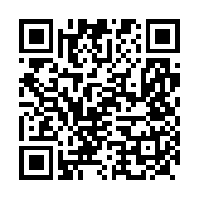

للموبايل
خُد جهازك معاك.
تطبيق Flutter لأندرويد. امسح QR الكمبيوتر وشوف شاشته واتحكّم باللمس.
تحميل لأندرويدالنسخة تجريبية. بعد التحميل افتح ملف APK. لو أندرويد طلب، اسمح بالتثبيت من المتصفح اللي بتستخدمه.
جهّز أجهزتك. وخلّيك قريب.
حمّل سهل ريموت على الموبايل أو الكمبيوتر، وتحكّم في جهاز ويندوز من أي شاشة على نفس الشبكة.
تطبيق Flutter لأندرويد. امسح QR الكمبيوتر وشوف شاشته واتحكّم باللمس.
تحميل لأندرويدالنسخة تجريبية. بعد التحميل افتح ملف APK. لو أندرويد طلب، اسمح بالتثبيت من المتصفح اللي بتستخدمه.
برنامج ويندوز لعرض الشاشة والتحكم، أو الاتصال بكمبيوتر تاني باستخدام رقمه.
تحميل لويندوزافتح ملف EXE مباشرة. البرنامج مستقل ولا يحتاج تثبيت Python.
تعذّر تجهيز الروابط. افتح إصدارات GitHub للتحميل مباشرة.

امسح الكود بكاميرا الموبايل العادية لفتح صفحة التحميل. بعد التثبيت، امسح QR الاتصال من داخل التطبيق.
افتح برنامج ويندوز وثبّت تطبيق أندرويد على موبايلك.
اضغط Start sharing على الكمبيوتر، وامسح QR من تطبيق سهل.
وافق على طلب الاتصال من الكمبيوتر، وابدأ استخدام جهازك.
لأ. برنامج الكمبيوتر بيكتشف عنوانه على شبكتك ويولّد QR فيه العنوان الصحيح. افتح تطبيق سهل على الموبايل وامسح QR، أو اكتب رقم الاتصال للبحث عن الكمبيوتر تلقائيًا داخل الشبكة. بعد تغيير الشبكة، أوقف المشاركة وابدأها تاني لتحديث QR.